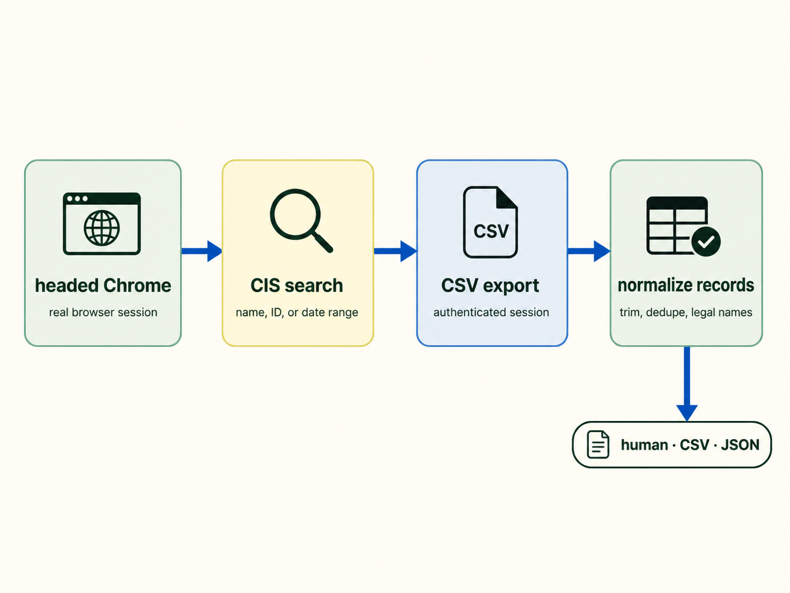

New owners are targeted fast
Newly formed LLCs can receive mailers that look government-adjacent and charge for unnecessary or low-cost services.
CIS-first public-records workflow
Umbra is a local Python CLI for finding newly formed active Virginia LLCs from SCC CIS before deceptive solicitation mailers reach the owners. It favors reliable, auditable collection over noisy scraping.

Solicitation companies monitor public formation records and send official-looking letters quickly. Umbra makes the same public records workflow repeatable for legitimate warning efforts.
Newly formed LLCs can receive mailers that look government-adjacent and charge for unnecessary or low-cost services.
Umbra uses CIS directly for fresh LLC detection and keeps the browser workflow narrow, observable, and repeatable.
Results are normalized, deduped by Entity ID, and exported as CSV for review, filtering, and owner-warning workflows.
The runner opens one headed Chrome session, searches CIS sequentially, exports the built-in CSV, and keeps a manifest so long runs can recover instead of starting over.
Use query for small windows or batch for monthly or weekly chunks.
Umbra reuses a headed Chrome session and returns to the search page between chunks.
Each chunk writes a CSV and manifest state under data/runs/<run-id>/.
The final output keeps one row per Entity ID and prefers Legal Name records.
# preview chunks without Chrome
uv run umbra batch --from 01-01-2025 --to 12-31-2025 --dry-run
# run the conservative batch lane
uv run umbra --csv --output year.csv batch \
--from 01-01-2025 --to 12-31-2025
# resume without refetching succeeded chunks
uv run umbra --csv --output year.csv batch \
--from 01-01-2025 --to 12-31-2025 --resume
# inspect state without opening Chrome
uv run umbra batch --run data/runs/<run-id> --statusInstead of holding a long run in memory, Umbra writes the state of every chunk. A failure on chunk nine no longer destroys chunks one through eight.
Umbra does not try to overpower CIS bot detection. It keeps the browser lane narrow, records what happened, and makes retries explicit.